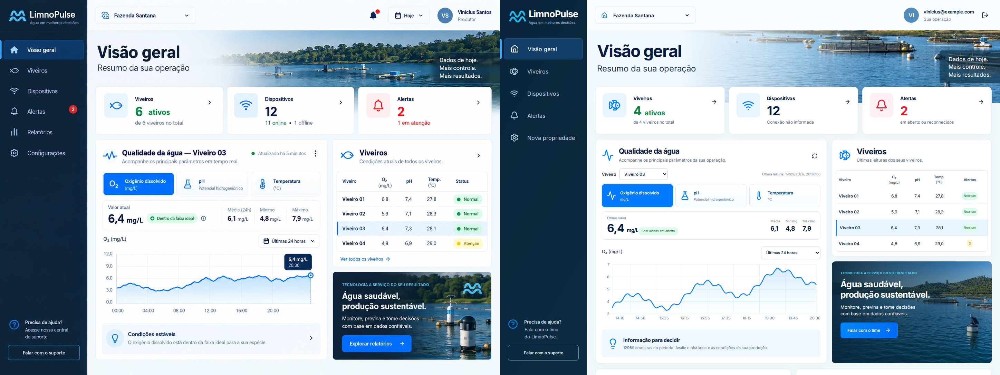
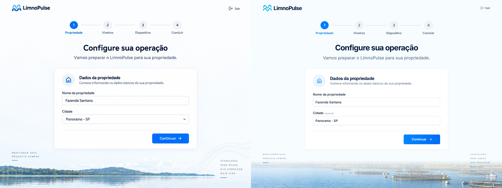
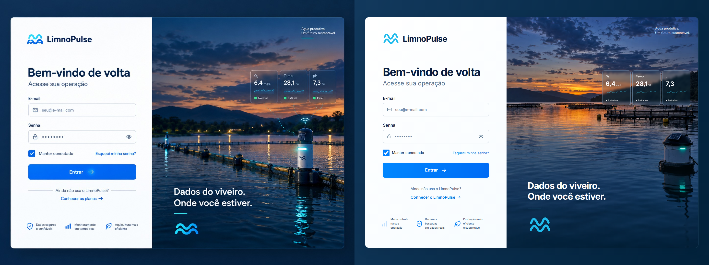
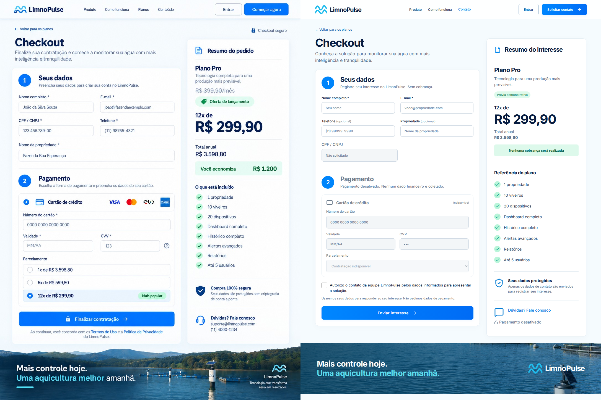
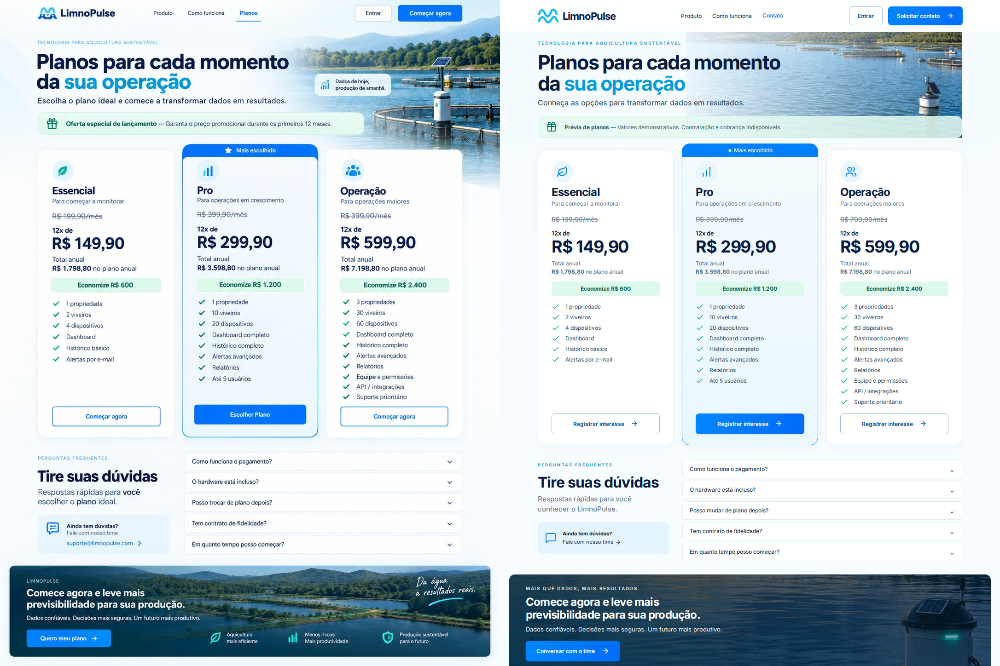
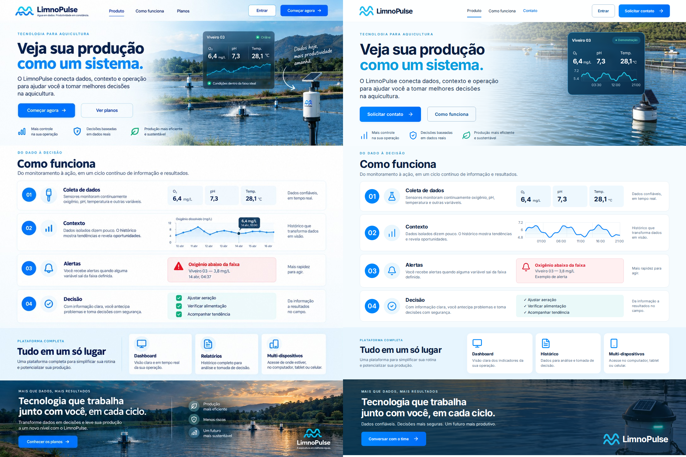

À esquerda: referência fornecida. À direita: implementação React. Capturas com relógio fixo, fontes locais carregadas e animações desativadas. O percentual de diferença inclui fotografias reconstruídas, textos e mudanças intencionais; não é um critério de aprovação automática.
dashboard
Dados controlados apenas nesta captura. Quatro viveiros correspondem às quatro linhas da fixture. Conexão desconhecida, alertas derivados de eventos e seletor de viveiro/período. Navegação limitada ao escopo; detalhes de dispositivos/alertas abaixo do painel.
1448 × 1086 · 15.12% dos pixels diferem com limiar 0,15 (antialiasing excluído)

onboarding
Cidade livre e opcional em vez de lista predefinida. Foto reconstruída; estados adicionais do fluxo são funcionais. Dados preenchidos só no teste.
1448 × 1086 · 11.25% dos pixels diferem com limiar 0,15 (antialiasing excluído)

login
Link comercial substituído por contato. Fotografia reconstruída; cartões explicitamente ilustrativos. Sem cadastro automático. Banner local oculto somente na captura visual.
1448 × 1086 · 19.07% dos pixels diferem com limiar 0,15 (antialiasing excluído)

checkout
Sem cobrança ou criação de conta. CPF e cartão desativados. Campos de consentimento e contato alteram a altura e a disposição do formulário.
1086 × 1448 · 15.43% dos pixels diferem com limiar 0,15 (antialiasing excluído)

planos
Rota oculta, noindex, preços apenas demonstrativos. CTA registra interesse. Preço anterior de Operação corrigido para coerência aritmética com a economia ilustrada.
1086 × 1448 · 19.24% dos pixels diferem com limiar 0,15 (antialiasing excluído)

produto
CTAs comerciais substituídos por contato; histórico apresentado sem prometer página extra de relatórios. Mantidas as quatro etapas e cartões de benefícios.
1086 × 1448 · 22.52% dos pixels diferem com limiar 0,15 (antialiasing excluído)

inicio
CTAs e faixa comercial substituídos por contato. Cartão ilustrativo identificado como demonstração. Fotografia, marca vetorial e ícones reconstruídos.
1086 × 1448 · 23.95% dos pixels diferem com limiar 0,15 (antialiasing excluído)